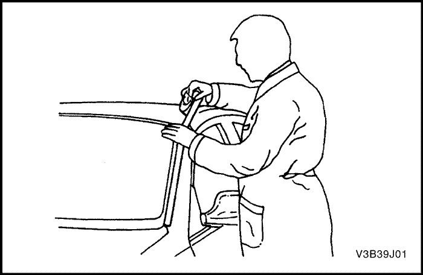

SECCIÓN 9J
ruido del viento
DIAGNÓSTICO
Diagnóstico del ruido del viento
Precaución: Un ayudante debe conducir el vehículo mientras el técnico localiza la situación del ruido producido por el viento, para evitar lesiones corporales o daños en el vehículo.
Es necesario efectuar una prueba de conducción para localizar con precisión la situación del ruido producido por el viento. A menudo, existe una filtración principal y varias secundarias. Si no se reparan todas, el problema sólo se solucionará parcialmente.
Durante la prueba de conducción, el técnico debe llevar consigo los siguientes elementos que le ayudarán en la localización.
- Un estetoscopio de mecánico o manguito de vacío.
- Un rollo de cinta adhesiva.
- Tira para calafatear
- Un lápiz para marcar cristales.
- Un destornillador.
Para la realización de la prueba en carretera, siga los pasos que se describen a continuación:
- Elija una ruta que incluya calles lisas y rectas y que discurran en las cuatro direcciones (norte, sur, este y oeste).
- Escoja calles con poco tráfico o ruido que pudieran interferir con la prueba.
- Conduzca el vehículo a las mismas velocidades en las que el cliente ha notado el problema o hasta que éste se produzca. No sobrepase los límites permitidos de velocidad.
- El ruido del viento es externo si se dan algunas de las siguientes condiciones:
- El ruido lo causa el viento.
- El ruido del viento se oye con el cristal de la puerta bajado y con el coche en movimiento.
- El ruido desaparece cuando se coloca cinta adhesiva sobre varias molduras y aberturas.
- El ruido del viento interno es aire que sale del vehículo y se debe reparar del siguiente modo:
- El ruido del viento interno es aire que sale del vehículo y se debe reparar del siguiente modo:
- Para localizar la filtración, envuelva con cinta adhesiva el cuerpo de las válvulas de descarga de presión del montante de la carrocería. Esto producirá un incremento de la presión en el interior del vehículo y hará que aumente el ruido.
- Utilice un estetoscopio o un manguito de vacío para localizar la filtración.
- Repare temporalmente la filtración con cinta adhesiva.



- Continúe efectuando comprobaciones para determinar si el ruido ha sido eliminado o si existen otras filtraciones.
- Una vez halladas todas las filtraciones, vuelva al taller y efectúe las reparaciones permanentes con las técnicas de ajustes y materiales de sellado adecuados.
MANTENIMIENTO Y REPARACIÓN
servicio con vehículo en marcha
Reparación del ruido del viento
Las eliminación de las filtraciones y ruidos producidos por el viento son muy similares a las reparaciones de las filtraciones de agua. Consulte la
Sección 9I, "Infiltraciones de agua". El procedimiento real depende del tipo de material sellante que se repare.
Las filtraciones alrededor de los burletes de las aberturas de las puertas no siempre indican que el burlete esté defectuoso. Un ajuste de la puerta o ventana puede resolver el problema. Consulte la
Sección 9P, "Puertas" o la
Sección 9L, "Lunas y espejos".